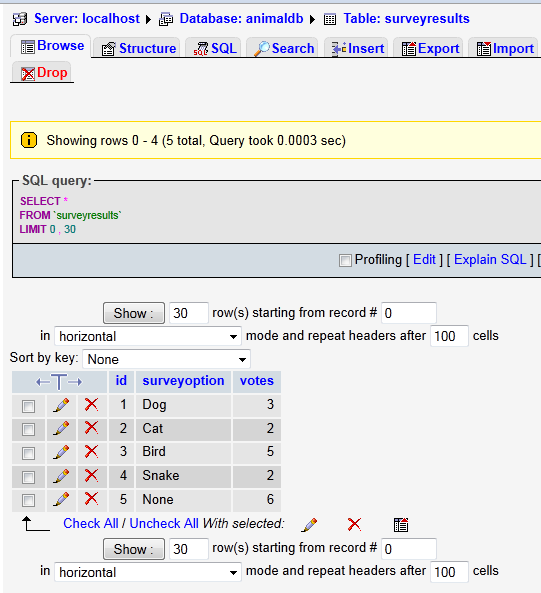

Tutorial 7 - Java Web Applications Using JDBC
by Dr. Wenjie He
1. Introduction to JDBC
Different database vendors implement their
database management systems (DBMS) in different ways.
How to make Java programs communicate with so many different databases without any problem? It is
not a trivial task.
Source Code: The source code of the example is given in
Tutorial7_AnimalSurveyJDBC.zip.
1.1 Separation of API and drivers
After trying different ways, the Sun Java team finaly found an excellent solution:
- Providing the application programmers the Java Database Connectivity (JDBC) API
(Application Programming Interface) for accessing and manipulating a wide range of relational
databases.
- Providing the database vendors the JDBC Driver API for creating database-specific drivers that
are responsible for accessing their (proprietary) databases.
The benefit of this approach is obvious:
- This separation of the API from particular drivers enables developers to change the underlying
database without modifying Java code that accesses the database other than changing the
driver's name, the database URL, and query strings.
Note: In different databases, the query statements could be different. They may
use different keywords sometimes. For example, the LIMIT is a keyword in MySQL, but is
not available in Oracle (at least up to certain version).
- Database vendors are responsible for providing their own drivers to connect to their specific databases.
- Programs written according to the API talk to the driver manager, which, in turn, uses a
driver to talk to the actual database.
1.2 JDBC API interfaces
The JDBC API consists of classes and interfaces for the following tasks:
- Establishing connections with databases;
- Sending SQL statements to databases;
- Processing results of the SQL statements;
- Obtaining database metadata.
There are four key interfaces:
- Driver: for loading an appropriate driver;
- Connection: for connecting to the database;
- Statement: for creating and executing SQL statements;
- ResultSet: for processing the result.
2. Basics of Relational Database Model
2.1 Basic concepts
- Database:
A database is an integrated collection of data.
- Database management system (DBMS):
A database management system provides mechanisims
for storing and organizing data consistent with the database's format.
- Query:
Request information that satisfies given criteria
- Structured Query Language (SQL):
SQL is used universally with relational-database systems
to perform queries and to manipulate data.
- Relation:
A relation is actually a table that consists of
non-duplicate rows.
- Record:
Each row of a table is called a record.
- Field (or column, or attribute ):
Each column of the table represents a field.
- Result Set:
The result of a query is called a result set.
Note: Only the select-type queries have result sets returned. Other types
(update, insert, delete) of queries do not have result sets returned.
- Primary Key:
A primary key is a field (or fields) in a table
that contain(s) unique data that cannot be duplicated in other records.
Note: Sometimes a single field is not sufficient to identify a record in a table, so we need
to use more than one field to identify a record. In this case, the primary key will be a composite key.
2.2 Understanding the script animaldb.sql
Our database script
animaldb.sql is in
Tutorial7_AnimalSurveyJDBC/AnimalSurvey
Code Listing: animaldb.sql
1
2
3
4
5
6
7
8
9
10
11
12
13
14
|
|
DROP TABLE IF EXISTS surveyresults;
CREATE TABLE surveyresults (
id int NOT NULL,
surveyoption varchar (20) NOT NULL,
votes int NOT NULL,
PRIMARY KEY (id)
);
INSERT INTO surveyresults VALUES
(1, 'Dog', 3),
(2, 'Cat', 2),
(3, 'Bird', 5),
(4, 'Snake', 2),
(5, 'None', 6);
|
Explanation:
- We like to write MySQL keywords in capital letters, while keep table names and field names in lower case.
It is not required, just our convention for clarity.
- (Line 1) Drop the table to avoid the complain when you re-run the script. Otherwise, if
the table already exists, the DBMS would not allow you to create the same table again.
- (Line 1) The IF EXISTS condition can avoid the complain when you run the
script the first time when there is no table to drop. If you do not have the
IF EXISTS condition, although you see an error message,
you can still populate your database normally. But usually people do not feel comfortable when
they see any error message.
- (Lines 2-7) The CREATE TABLE statement specifies a table name, attributes
(or fields), and types.
- (Line 3) The id field is an int type, and NOT NULL
means a value of this field must be provided when a record is created.
- (Line 4) The varchar (20) means that the field surveyoption
is a variable-length string with at most 20 characters.
- (Line 6) The id field is declared as the primary key of the table.
- (Lines 9-14) This is a short way to insert 5 records into the table. There are several other ways to
insert data.
- (Line 10) A string value must be wrapped in a pair of single quotes, but integers are not required to
be placed in single quotes. If you place integers in single quotes, there is no problem.
2.3. Populating database
When we installed
XAMPP, we took the default setting. The default
username and
password for
MySQL set in
XAMPP:
username=root,
password=
(password is empty).
Steps to populate database:
- Open a web browser and get to the phpmyadmin home page.

- In the field Create new database, type the database name: animaldb,
and click the Create button. You would see a new database animaldb created.
- Click the SQL tab, and copy the animaldb.sql content into the area,
click the Go button, the database is populated as follows,
- Click the icon in the circle above, you would see the data,

Now we are ready to run the example.
3 Developing Database Applications Using JDBC
We run the example
AnimalSurvey first.
3.1 Running the example
- Create a Dynamic Web Project called AnimalSurvey in the
Eclipse for Java EE.
File ⇒ New ⇒ Dynamic Web Project
Type AnimalSurvey as the project name. When you click the Next button twice, you will see the window,
- Make sure that you check the checkbox of Generate web.xml deployment descriptor.
We will use this file to configure the welcome file.
- Click Finish.
Then you will see your project tree as follows,

- Create a package called
edu.umsl.servlets.
Right-click the src node ⇒ New ⇒ Package
- Copy the servlet SurveyServlet.java from Tutorial7_AnimalSurveyJDBC/AnimalSurvey
into the package edu.umsl.servlets by drag-and-drop.
Note: Since SurveyServlet.java uses an annotation (@WebServlet("/SurveyServlet"))
to configure the servlet, we do not need to update the web.xml for this servlet.
- Drag-and-drop the file Tutorial7_AnimalSurveyJDBC/AnimalSurvey/Survey.html onto the WebContent node.
- Expand the node WebContent ⇒ expand the node WEB-INF
⇒ double-click the node web.xml to open it in the source area.
Change the following line
<welcome-file>index.html</welcome-file>
to
<welcome-file>Survey.html</welcome-file>
- Drag-and-drop the MySQL driver JAR file mysql-connector-java-5.1.7-bin.jar from
T6_JDBC/AnimalSurvey onto the node
AnimalSurvey/WEB-INF/lib of your project.
Option: Or you can copy the driver file into the lib
file under your Tomcat's installation directory. In this way, you only do it once. When you develop other Java
web applications, the MySQL JDBC driver will be available all the time.
- Run the project.
Right-click the project node ⇒ Run As ⇒ Run on Server
You would see,
- If you are not sure if this project is the only one configured, click Next. In this case, you have
a chance to remove other projects from the configured list to avoid potential conflict.
- If you are sure that this project is the only one configured, click Finish. The project will start
immediately.
When you click Next, you would see,
You can see there are more than one project in the configured list. Click Remove All to remove all the project
except the current one in the configured list.
Click Finish to run the current project. You would see
3.2 Source code
Code Listing: SurveyServlet.java
1
2
3
4
5
6
7
8
9
10
11
12
13
14
15
16
17
18
19
20
21
22
23
24
25
26
27
28
29
30
31
32
33
34
35
36
37
38
39
40
41
42
43
44
45
46
47
48
49
50
51
52
53
54
55
56
57
58
59
60
61
62
63
64
65
66
67
68
69
70
71
72
73
74
75
76
77
78
79
80
81
82
83
84
85
86
87
88
89
90
91
92
93
94
95
96
97
98
99
100
101
102
103
104
105
106
107
108
109
110
111
112
113
114
115
116
117
118
119
120
121
122
123
124
125
126
127
128
129
130
131
132
133
134
135
136
137
138
139
140
141
142
143
144
145
146
147
148
149
150
|
|
package edu.umsl.servlets;
import java.io.IOException;
import java.io.PrintWriter;
import java.sql.Connection;
import java.sql.DriverManager;
import java.sql.PreparedStatement;
import java.sql.ResultSet;
import java.sql.SQLException;
import java.text.DecimalFormat;
import javax.servlet.ServletConfig;
import javax.servlet.ServletException;
import javax.servlet.UnavailableException;
import javax.servlet.annotation.WebServlet;
import javax.servlet.http.HttpServlet;
import javax.servlet.http.HttpServletRequest;
import javax.servlet.http.HttpServletResponse;
@WebServlet("/SurveyServlet")
public class SurveyServlet extends HttpServlet {
private static final long serialVersionUID = 1L;
private Connection connection;
private PreparedStatement updateVotes, totalVotes, results;
// set up database connection and prepare SQL statements
public void init(ServletConfig config) throws ServletException {
// attempt database connection and create PreparedStatements
try {
Class.forName("com.mysql.jdbc.Driver");
connection = DriverManager.getConnection(
"jdbc:mysql://localhost:3306/animaldb", "root", "");
// PreparedStatement to add one to vote total for a
// specific animal
updateVotes = connection
.prepareStatement("UPDATE surveyresults SET votes = votes + 1 "
+ "WHERE id = ?");
// PreparedStatement to sum the votes
totalVotes = connection
.prepareStatement("SELECT sum( votes ) FROM surveyresults");
// PreparedStatement to obtain surveyoption table's data
results = connection
.prepareStatement("SELECT surveyoption, votes, id "
+ "FROM surveyresults ORDER BY id");
} // for any exception throw an UnavailableException to
// indicate that the servlet is not currently available
catch (Exception exception) {
exception.printStackTrace();
throw new UnavailableException(exception.getMessage());
}
} // end of init method
// process survey response
protected void doPost(HttpServletRequest request,
HttpServletResponse response) throws ServletException, IOException {
// set up response to client
response.setContentType("text/html");
PrintWriter out = response.getWriter();
DecimalFormat twoDigits = new DecimalFormat("0.00");
// start XHTML document
out.println("<?xml version = \"1.0\"?>");
out.println("<!DOCTYPE html PUBLIC \"-//W3C//DTD "
+ "XHTML 1.0 Strict//EN\" \"http://www.w3.org"
+ "/TR/xhtml1/DTD/xhtml1-strict.dtd\">");
out.println("<html xmlns = \"http://www.w3.org/1999/xhtml\">");
// head section of document
out.println("<head>");
// read current survey response
int value = Integer.parseInt(request.getParameter("animal"));
// attempt to process a vote and display current results
try {
// update total for current survey response
updateVotes.setInt(1, value);
updateVotes.executeUpdate();
// get total of all survey responses
ResultSet totalRS = totalVotes.executeQuery();
totalRS.next();
int total = totalRS.getInt(1);
// get results
ResultSet resultsRS = results.executeQuery();
out.println("<title>Thank you!</title>");
out.println("</head>");
out.println("<body>");
out.println("<p>Thank you for participating.");
out.println("<br />Results:</p><pre>");
// process results
int votes;
while (resultsRS.next()) {
out.print(resultsRS.getString(1));
out.print(": ");
votes = resultsRS.getInt(2);
out.print(twoDigits.format((double) votes / total * 100));
out.print("% responses: ");
out.println(votes);
}
resultsRS.close();
out.print("Total responses: ");
out.print(total);
// end XHTML document
out.println("</pre></body></html>");
out.close();
} // if database exception occurs, return error page
catch (SQLException sqlException) {
sqlException.printStackTrace();
out.println("<title>Error</title>");
out.println("</head>");
out.println("<body><p>Database error occurred. ");
out.println("Try again later.</p></body></html>");
out.close();
}
}
// close SQL statements and database when servlet terminates
public void destroy() {
// attempt to close statements and database connection
try {
updateVotes.close();
totalVotes.close();
results.close();
connection.close();
} // handle database exceptions by returning error to client
catch (SQLException sqlException) {
sqlException.printStackTrace();
}
} // end of destroy method
}
|
3.2.1 Database preparation
Before you can start programming on JDBC, you need to do some preparation work to get your database ready
in the following steps:
- Get the database driver JAR file. We get the MySQL driver mysql-connector-java-5.1.7-bin.jar from
the MySQL website. (Your version could be different.)
- Place the database driver into the right folder. In this example, we place it into the folder
AnimalSurvey/WEB-INF/lib. There is another location in Tomcat where we can put
the driver. (In [TOMCAT_HOME]/lib)
- Make sure that your database server is up and running. Since we installed MySQL database server
as a Windows service, it is always running. If you use some other database, you may need to start
the database server manually.
- Verify that you have created and populated the database.
- Find the database URL. Here our database URL is
jdbc:mysql://localhost:3306/animaldb
For MySQL, you just append your database name after jdbc:mysql://localhost:3306/
to form the database URL.
3.2.2 Loading the driver
You need to tell the JVM which driver class to load. See
|
|
Class.forName("com.mysql.jdbc.Driver");
|
Explanation:
- The name of MySQL driver class is com.mysql.jdbc.Driver. You may ask how to find
the name of this class. One way is searching on web. Another way is using the WinZip
software to open the driver's JAR file mysql-connector-java-5.1.7-bin.jar. By examining
the filenames, you should be able to find the driver class as follows,
- (Line 31) The JVM loads the class com.mysql.jdbc.Driver
(and other related classes) into the memory
using the static method forName of Class. Since we put the
mysql-connector-java-5.1.7-bin.jar file in the location
AnimalSurvey/WEB-INF/lib, this is one of the locations that the JVM knows to
search for the class.
- (Line 31) The JVM loads the class com.mysql.jdbc.Driver at the runtime.
That means even if you type the class name com.mysql.jdbc.Driver wrong, you
would not get any compile error for it. But when you run the code, you would encounter
a runtime error with a ClassNotFoundException.
- A driver is a concrete class that implements the java.sql.Driver interface.
The database vendor provides the implementation of this class.
- After the class com.mysql.jdbc.Driver is loaded, we call it registered. That means
the JVM makes it available for other classes to use in memory.
3.2.2 Establishing the connection
A connection is required between the database and the Java program for data communication.
|
|
connection = DriverManager.getConnection(
"jdbc:mysql://localhost:3306/animaldb", "root", "");
|
Explanation:
- (Line 32) The java.sql.DriverManager class provides the basic service for
managing a set of JDBC drivers.
- (Line 32) When the static method getConnection of class
DriverManager is called, the DriverManager attempts
to select an appropriate driver from the set of registered JDBC drivers.
- (Lines 32-33) The getConnection method attempts to establish a connection
to the given database URL with the username and password.
- (Lines 32-33) The getConnection method returns a
java.sql.Connection object that represents a session/connection with a specific
database. Within the context of a Connection, SQL statements are executed
and results are returned.
3.2.3 Creating statements
In order to send SQL statements to and get results back from the database, we need to create
Statement objects.
|
|
updateVotes = connection
.prepareStatement("UPDATE surveyresults SET votes = votes + 1 "
+ "WHERE id = ?");
|
Explanation:
- (Line 39) The prepareStatement method of the Connection class
creates a PreparedStatement object for sending parameterized SQL statements to the database.
- The PreparedStatement interface is a subinterface of the
Statement interface.
- A Statement object is used to send only non-parameterized SQL statements;
a PreparedStatement object can be used to send either parameterized
SQL statements or non-parameterized SQL statements.
- (Lines 38-40) The statement we have here is a parameterized SQL statement, because
it contains a ? that is called an IN parameter. The value of this parameter
will be provided later.
- An SQL statement with or without IN parameters can be pre-compiled and stored in a
PreparedStatement object. This object can then be used to efficiently
execute this statement multiple times.
- The prepareStatement method of the Connection is optimized for
handling parametric SQL statements that benefit from precompilation.
- Lines 44-45 and Lines 49-51 give two non-parameterized SQL statements.
|
|
totalVotes = connection
.prepareStatement("SELECT sum( votes ) FROM surveyresults");
|
and
|
|
results = connection
.prepareStatement("SELECT surveyoption, votes, id "
+ "FROM surveyresults ORDER BY id");
|
3.2.4 Executing statements
In order to execute a parameterized SQL statement, we need to set the value(s) to the IN parameter(s).
|
|
updateVotes.setInt(1, value);
updateVotes.executeUpdate();
|
Explanation:
- (Line 91) The setInt method of a PreparedStatement object
sets the designated parameter to an int value. The index 1
means the value should go to the first ? in the parameterized SQL statement.
- (Line 91) Here we use the Java's generic way (e.g. Java's int value) to
handle the SQL statements, so that the programmers can write database-independent code. Then
the driver would convert the int value to a database-specific SQL
INTEGER value when it sends it to the database. This conversion is hidden to
the programmers.
- (Line 92) Executes the SQL statement in this PreparedStatement object,
which must be an SQL INSERT, UPDATE or DELETE statement; or an
SQL statement that returns nothing.
3.2.5 Processing Query Results
The query result is returned in a
ResultSet object, and we will process it to complete
the last step of the JDBC procedure.
|
|
ResultSet totalRS = totalVotes.executeQuery();
totalRS.next();
int total = totalRS.getInt(1);
|
and
100
110
111
112
113
114
115
116
117
|
|
ResultSet resultsRS = results.executeQuery();
...
while (resultsRS.next()) {
out.print(resultsRS.getString(1));
out.print(": ");
votes = resultsRS.getInt(2);
out.print(twoDigits.format((double) votes / total * 100));
out.print("% responses: ");
out.println(votes);
}
|
Explanation:
- (Line 96) Executes the SQL query in this PreparedStatement object and
returns the ResultSet object generated by the query. The ResultSet
object holds the table of data representing a database result set.
- (Line 96) A ResultSet object maintains a cursor pointing to its current
row of data. Initially the cursor is positioned before the first row. Since the cursor does
not point to any row at this time, it points to null.
- (Line 97) In order to access the first row of the result set, the next()
method of the ResultSet object is called, which moves the cursor from the
null position to the first row (if there is a first row).
- (Line 98) The integer value 1 in getInt(1) refers to
the first column of the ResultSet object (not the original table).
Since the first column of the ResultSet object
is an integer, the getInt(int) method of the
ResultSet object is called to return an integer value.
- (Line 98) The JDBC driver takes care of the conversion between the
database-specific INTEGER data to the Java int data.
- (Line 110) The next() method of the ResultSet object
moves the cursor down one row from its current position. It returns a boolean
value. If the new current row is valid, it returns true;
if there are no more rows, it returns false.
- (Line 111) The getString(int) method of the ResultSet object
does a similar way to that of getInt(int), but for the String returned data.
Note: In this servlet, we use the annotation
@WebServlet("/SurveyServlet") to configure
the URL pattern of the servlet. So there is no need to configure it in the
web.xml.
==========The End==========